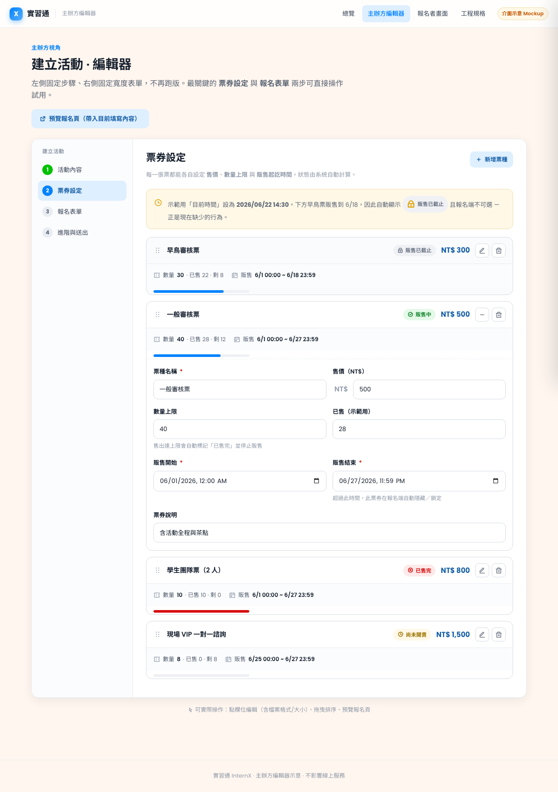
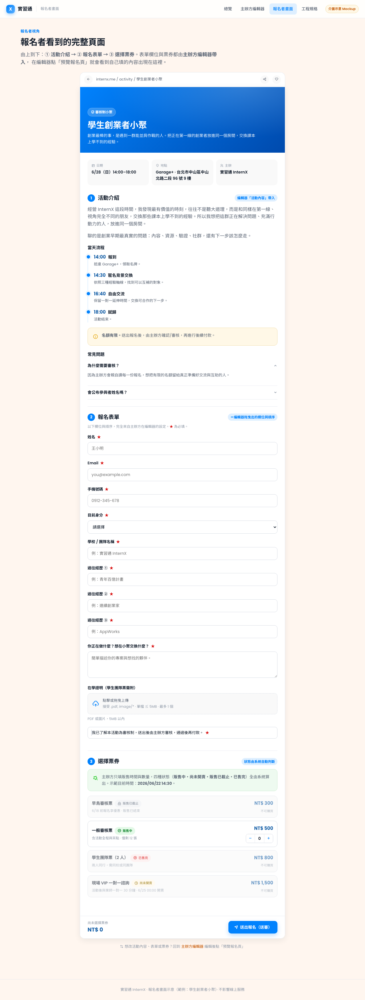

它不是新畫面，而是接進實習通既有位置
這個編輯器與報名頁不會憑空跳出。它們替換 / 升級實習通現有的兩個位置： 主辦方的「新增 / 編輯活動」，以及報名者的「活動詳情頁」。下面用實習通的介面動線說明點擊路徑。
串接位置（對應現有路由與檔案）
| 新畫面 | 實習通位置（路由） | 對應現有檔案 |
|---|---|---|
| 主辦方編輯器 新增活動 |
/[lang]/professional/new-activity側邊欄「主辦專區 → 新增活動」 |
pages/[lang]/professional/new-activity.jsxcomponents/Activities/AddActivity.tsx |
| 主辦方編輯器 編輯既有活動 |
/[lang]/activity/[activityId]/edit活動卡片「編輯」 |
components/Activities/AddActivity.tsxFormBuilder/、activity-form-schema.ts |
| 報名者畫面 活動詳情 + 報名 |
/[lang]/activity/[activityId]活動列表點任一活動 |
components/Activities/ActivityContent.jsxcomponents/Registration/Registration.tsx |
下方實習通畫面，是依現有前端程式碼結構與側邊欄項目重繪的示意（登入後畫面無法headless擷取）。 正式交接可直接換成實際截圖 — 動線位置與路由不變。
原本的官方帳號後台長這樣，我們在上面加兩塊
實習通已有官方帳號後台 professional/home（框架 ProfessionalPlatformFrame）。下圖依真實程式碼重繪：左側是既有側邊欄、主區是既有「我的活動（待審核 / 已批准 / 已拒絕）」。我們只在側邊欄加「報名名單」「創作內容」。
兩種「審核」別混淆：原後台的「待審核 / 已批准 / 已拒絕」是活動發布審核（平台 admin 審活動能否上架）。這次新增的「報名名單」是報名者審核（主辦方審個別報名者），是不同的東西。
怎麼串接（mockup → 原平台）
| 這份 mockup | 原平台位置 | 改動 |
|---|---|---|
| 認證帳號後臺（殼） | ProfessionalPlatformFrame + PROFESSIONAL_SERVICES | 沿用；側邊欄加「報名名單」「創作內容」 |
| 活動管理 / 我的活動 | professional/home.jsx | 已存在；票券改新模型、卡片顯示報名／待審核數 |
| 報名名單（報名者審核） | 新增 professional/registrations | Registration.status + 平台代收代付 |
| 建立活動 | professional/new-activity.jsx | 換成新編輯器 |
| 創作內容（部落格） | 新增 professional/blog | 發佈權 gated by verified-creator |
| 報名者公開頁 | activity/[activityId] | 對齊版型、表單依 formSchema 渲染 |
權限整合（主辦 ＝ 創作）：原本 professional/* 只認 admining（官方帳號）。整合後放寬為 admining（辦活動）或 verified-creator 標章（發內容），兩者進同一個後台、依能力顯示側邊欄。完整規格見 INTEGRATION.md §11。
主辦方：從「主辦專區」進入新編輯器

點側邊欄「主辦專區 → 新增活動」（或活動卡片「編輯」）→ 開啟新編輯器，分四步：活動內容 / 票券設定 / 報名表單 / 進階送出。
報名者：從活動列表進入新報名頁

報名者在「職涯活動媒人婆」點任一活動 → 進入活動詳情頁（即新報名頁），由上到下：活動介紹 → 報名表單 → 選擇票券 → 送出。
創作者：申請認證 → 發內容 / 辦活動（同一帳號）
創作者不是另一條註冊線。一般帳號申請「認證創作者」，審核通過拿到 verified-creator 標章後，就能發部落格、辦活動、擁有創作者主頁 —— 與「主辦」共用同一個認證帳號。
1 · 申請認證
一般註冊後於 /dashboard/verified-role-apply 送出，接 submitVerifiedRoleApplication() → verifiedRoleApplications。
2 · 審核發標章
管理員 approveVerifiedRoleApplication() → grantVerifiedBadgeToUser() → profiles.badges += verified-creator。
3 · 主頁 + 發內容
創作者主頁（Profile.tsx activeSectionTab：部落格 / 主辦活動 / 活動紀錄）+ 部落格（data/blog.ts + BlockEditor）。
| 創作者需求 | 既有可重用 | 檔案 |
|---|---|---|
| 認證標章 | verified-creator（金色膠囊 + quill-pen） | components/Badge/ProfileBadge.tsx |
| 身分送審 / 審核 | verifiedRoleApplications 申請集合 + 管理員審核 | data/verified-role-application.ts |
| 撰寫部落格 | BlogPost + BlockEditor（發佈權放寬給帶標章者） | data/blog.ts |
| 主辦活動（在主頁） | Activity.createdBy + Registration.userUid | data/activity.ts |
如何串接（給工程師）
主辦方編輯器
用新編輯器取代 new-activity.jsx 與活動 /edit 內的舊票價 / 表單區塊。沿用既有步驟式 AddActivity.tsx 外殼，把「票券」與「報名表單」兩步換成新版（票券含販售時間/數量、表單用 @dnd-kit 拖曳＋欄位設定抽屜）。
報名者畫面
新報名頁就是現有 activity/[activityId]。把 ActivityContent.jsx 的版型對齊（介紹 → 表單 → 票券），Registration.tsx 依 activity.formSchema 動態渲染欄位，票券狀態用共用的 ticketStatus()。
關鍵：報名者填的欄位 = 主辦方在編輯器拖曳出的欄位（同一份 formSchema）。資料模型與逐步做法見
工程規格 與 INTEGRATION.md。